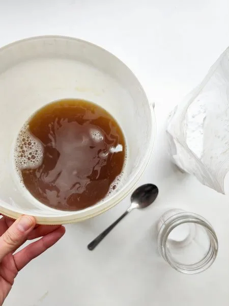
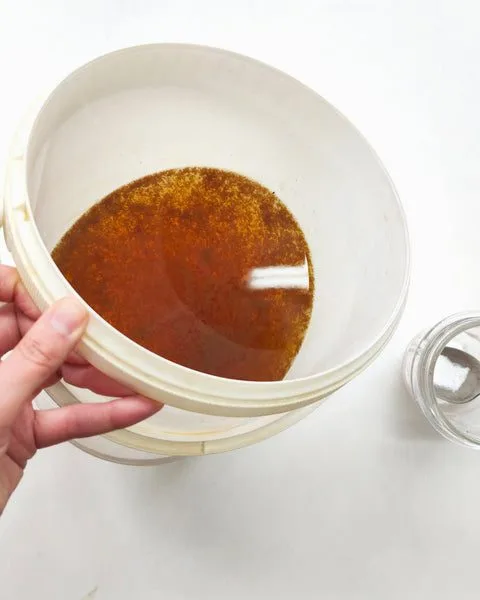
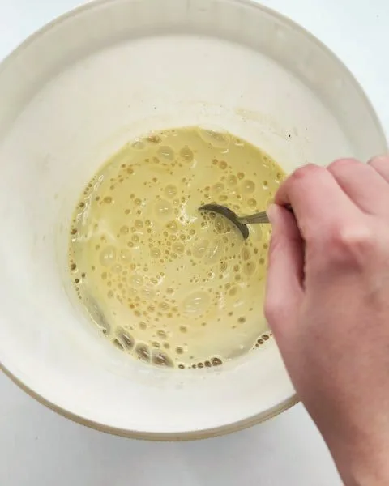
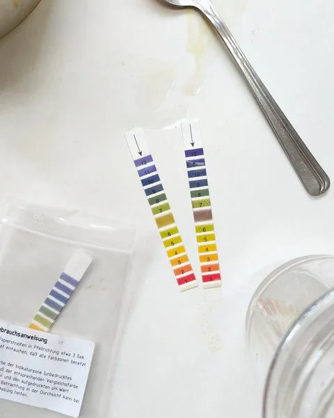
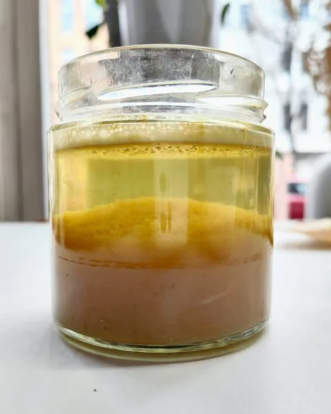
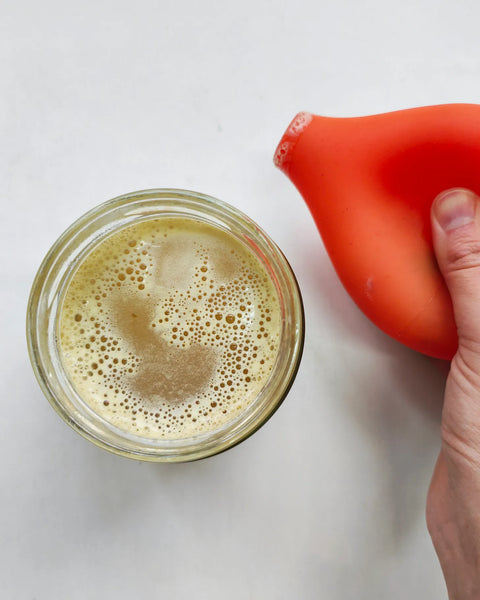
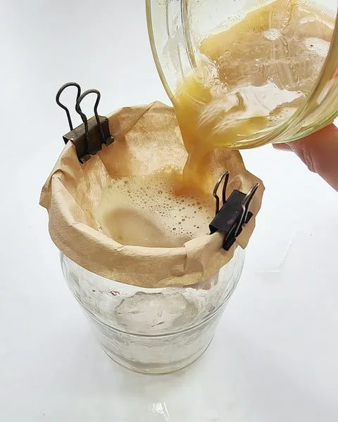
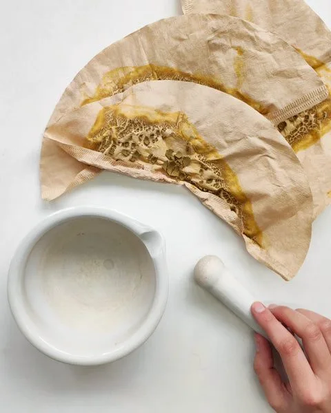
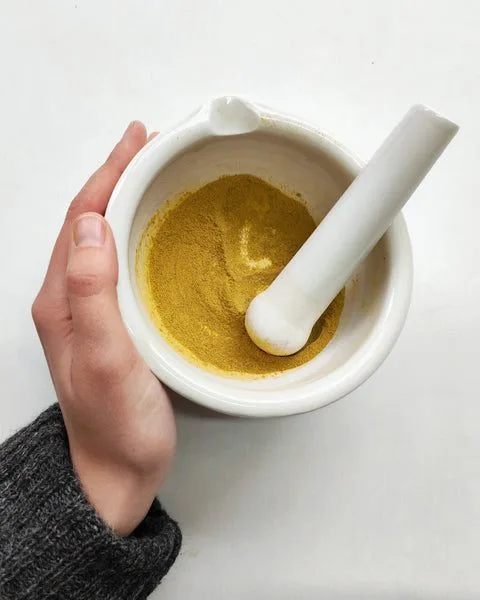
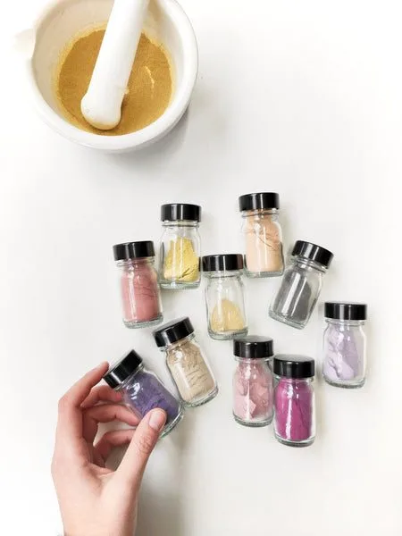

I did some plant dyeing last week and had four dye baths that were still quite potent. I didn't want to simply dispose of them, so, as always, I turned them into pigments. And I thought you might want to know the process, so here it is.
Dyes vs. pigments
There's one main difference between dyes and pigments. Dyes are substances that can be dissolved in water — that's why, to extract color from most plants, you simply cook them. Pigments, on the other hand, can't be easily dissolved, only dispersed. These are particles that float freely in the liquid (not unlike fish in a pond) but don't dissolve within it, keeping their form. The vast majority of plant colors are dyes. There are a few exceptions, though, for example, indigo. Indigo is a pigment and has to undergo a chemical process in order to dissolve and be used to color fibers.
Pigments vs. dye extracts
There is one more form in which dyes can come — extracts. Extracts are dyes with all water removed. Think of it like making a super-concentrated dye bath and letting all the water evaporate. Therefore, extracts can be dissolved back into water, too.
Why make pigments, then, if we can have a powdered form with extracts? Dye extracts are super-fine powders. Pigments are dyes connected with alum and soda ash, so the size of the pigment particles is considerably bigger. It's easier to handle them, and it's easier to filter them (you'd need a super-fine filter to make extracts). Pigments don't dissolve when mixed with a painting medium, rather the medium holds them. And they are more lightfast, thanks to aluminum, which is a mordant.
Making pigments is really easy once you know what to expect, so let me show you the process.
Tools you need
- leftover dye bath
- potassium aluminum sulfate (PAS or alum)
- soda ash (sodium carbonate)
- coffee filters
To turn your dye bath into pigment, start with a strained liquid. You don't want any parts of plants or threads from fabric to be caught up in the pigment. Pour the dye bath through a fine muslin cloth, and then warm up the dye.

Dissolve alum in the leftover dye bath
Weigh around 10g of alum for every 1L of the dye bath. If your dyebath is still quite strong, you might need more alum to bind all the dye particles. Dissolve the alum into your warm dye bath. Alum should bind the dye particles quickly, and you'll see small particles floating in the liquid. Dissolved no more — now they are dispersed.

Neutralize the dye bath
Alum makes the liquid acidic, so now it's time to neutralize it with soda ash, which is alkaline. This ingredient will react with the acidic liquid and produce a considerable amount of foam. Make sure to use a tall container with enough space for the foam to rise. You need around half of the weight of alum, so usually around 5g of soda ash for every 1L of the dye bath.

Check the pH level
Once both ingredients are combined, check the pH level. It should be neutral (pH 7). I went over 7 on my first try, so I had to add some more alum to push the pH level down.

Wait for the pigment to settle
I moved some of the liquid to a glass jar to show what's happening now. The pigments are slowly falling to the bottom of the container and clear water is staying on top. You can see in the jar that the water still has some dye dissolved in it, hence the pale yellow color. I could add some more alum to bind it, but I think I'll have enough pigment to play with anyway, so I left it the way it is.

Remove the water
Once the pigments settle to the bottom, I use a rubber pear to remove the water from the top. You can also carefully pour it out, making sure that you don't disturb the sediment.

Filter the pigment
Time to filter the pigment. I don't have a professional setup, so I am using coffee filters attached to a glass jar. I pour some liquid very slowly. I noticed you either need super-high-quality filters (which are expensive), or you need to go slow, otherwise the filters might break. So I go slow, pouring just a few drops until the pigments start settling on the walls of the filter. After a few minutes, it's safe to pour in bigger portions.

Let the pigment dry
From 2L of leftover dyebath, I usually produce four filters' worth of sediment. Wait for the water to filter through. What you should see at the bottom of the jar should be clear water. All pigment should stay on top of the filter. Carefully take out the filters and lay them out to dry. It will take a few days for the remaining water to evaporate.

Grind in a mortar
This is what the chunks of dry pigment look like after grinding. I use a porcelain mortar to grind them into finer form.

Storing and using
I store the pigments in glass jars and turn them into oil or watercolor paints for my art projects.

The lightfastness of these pigments depends on the quality of the dye you used. For example, madder root was traditionally used to make alizarin crimson red paint and still looks wonderful in old masters' paintings. But a paint made with hollyhock pigments certainly wouldn't last centuries. That being said, the elusive nature of natural color can be a feature, not a flaw, so don't let it stop you, and have fun with the colors nature offers us.
May you also find small pleasures in making things you don't yet have a plan for.
Until next time,
Ania